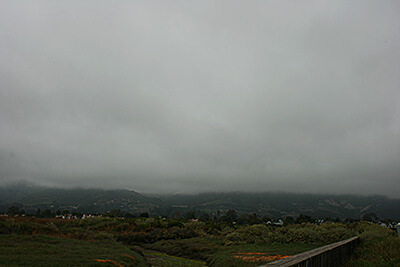

×

Cumulus
Cumulus clouds look like fluffy, white cotton balls in the sky. They are beautiful in sunsets, and their varying sizes and shapes can make them fun to observe!

Stratus
Stratus cloud often look like thin, white sheets covering the whole sky. Since they are so thin, they seldom produce much rain or snow. Sometimes, in the mountains or hills, these clouds appear to be fog.

Cumulonimbus
Cumulonimbus clouds grow on hot days when warm, wet air rises very high into the sky. From far away, they look like huge mountains or towers.

Stratocumulus
Stratocumulus clouds are patchy gray or white clouds that often have a dark honeycomb-like appearance.